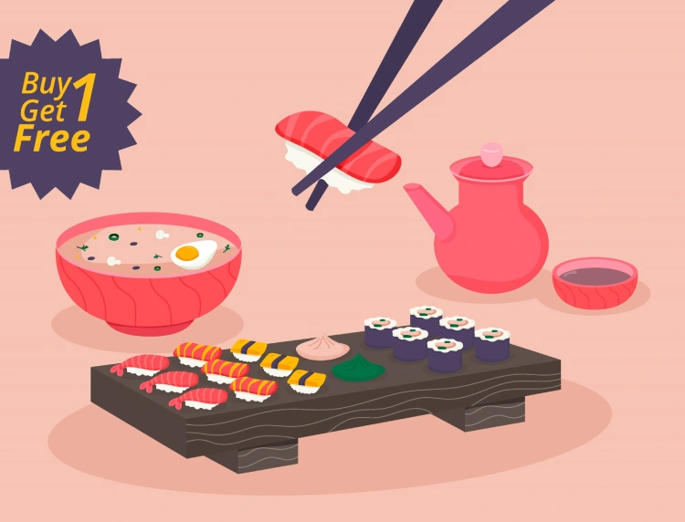

|
سوشی، خوراکی محبوب ژاپنی، از ترکیب برنج پخته و چاشنی سرکه با خوراک دریایی (اغلب خام)، سبزیجات و تخم مرغ تشکیل شده است. این خوراک به طور سرد سرو میشود و تنوع زیادی در نوع و شکل آن وجود دارد. برخی از انواع محبوب سوشی عبارتند از: نیگیری: قطعات نازک ماهی خام یا پخته شده روی برنج فشرده ماکی: برنج و مواد پر شده در جلبک دریایی نوری که به صورت رول پیچیده میشود اوراماکی: رول برنج و مواد که با جلبک دریایی در بیرون پیچیده میشود تِهماکی: سوشی مخروطی شکل که با دست پیچیده میشود سوشی به دلیل طعم منحصر به فرد، تنوع و ارزش غذایی بالا، در سراسر جهان محبوبیت زیادی پیدا کرده است. علاوه بر طعم لذیذ، سوشی فواید سلامتی متعددی نیز دارد، زیرا سرشار از پروتئین، اسیدهای چرب امگا 3 و ویتامین B12 است. اگر به دنبال تجربه طعم جدید و غذای سالم هستید، سوشی انتخابی عالی برای شما خواهد بود. |
|||||
.webp) |
.webp) |
.webp) |
.webp) |
.webp) |
 |
طرز تهیه سوشی در خانه |
|||||
|
طرز تهیه سوشی ساده در خانه
در این ویدیوی گام به گام به شما نشان می دهم که هر کسی می تواند در خانه سوشی درست کند. شما می توانید 30 سال وقت صرف یادگیری این مهارت کنید یا این مراحل آسان را دنبال کنید. امیدوارم این را در خانه امتحان کنید، زیرا بسیار ساده و بسیار خوشمزه است. |
|||||
موسیقی لوفو ژاپنی |
|||||
| با چاپستیک برش دار |
|||||
|
کشف کنید
اکثر انواع سوشی ها با چاپستیک خورده می شوند. اما اگر تا به حال با این چوب ها غذا نخورده اید نگران نباشید. معمولا سرآشپز یا گارسون قبل از سرو غذا روش صحیح غذا خوردن با چاپستیک را به شما آموزش می دهد و باور کنید، غذا خوردن با چاپستیک به آن سختی که به نظر می رسد هم نیست! |
 | ||||
|
سفارش آنلاین سوشی |
|||||
مشخصات شما |
سفارش شما |
ارسال |
|||
تماس با ما |
|||||
اینستاگرامsinisushi@واتساپ02177912157 |
شماره تماس02177912157 آدرستهران - میدان هفت حوض خیابان گلبرگ غربی پلاک 40 |
||||